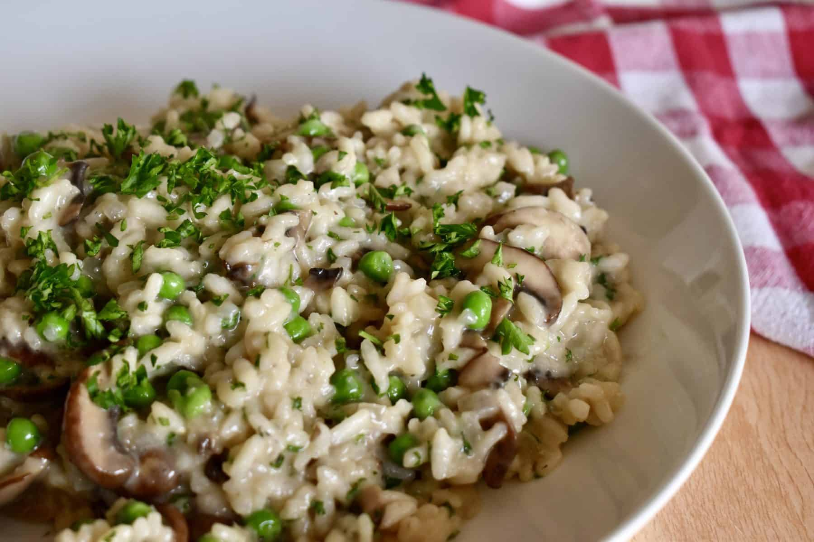

Mushroom & Pea Risotto

This creamy mushroom risotto warms you up on a winter night!
A dish made with parmesan, white wine and vegetable broth - the arborio rice melts in the mouth and warms your insides.
THIS IS AN INSTANT POT RECIPE
Ingredients
- 1 tbsp olive oil
- 2 tbsp butter (1 at beginning, 1 at end)
- 3 cloves minced garlic
- 1 medium onion diced
- medium pack of mushrooms
- 1 tsp dried thyme
- 1 ¼ tsp salt
- black pepper to taste
- 1 ½ cups arborio rice
- ½ cup white wine
- 4 cups (950ml) veg stock
- 1 cup frozen peas
- ½ cup of parmesan cheese
Steps
- Turn sauté on and add one tablespoon of butter & olive oil. When hot, add the onion and sauté until slightly translucent, about 3 minutes.
- Add the garlic and thyme. Sauté for 1 minute.
- Now add the mushrooms and sauté for 3-4 minutes until tender.
- Add the arborio rice and stir to coat.
- Pour in the wine & cook until liquid mostly cooks down. About 2 minutes.
- Stir in the broth, salt & pepper then Pressure Cook; 6 Mins Custom High
- The cooker will beep when the time is up. Carefully turn the steam release handle to the Venting position for a quick release (It will loudly spurt out lots of steam and some water). Once the Float Valve goes down you can carefully open the lid.
- The risotto will look soupy at first. Just stir and It will thicken up. Stir in the peas, remaining butter, and cheese. Taste & add seasoning if needed.
- Serve with optional fresh-cut parsley, olive oil, red pepper flakes, lemon wedges, and fresh cracked pepper.
Home